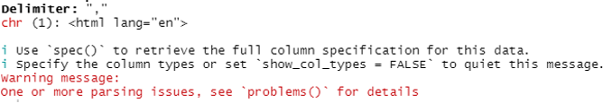

3 Open Peer Review
3.1 Onderzoek op reproduceerbaarheid beoordelen
In dit gedeelte wordt een artikel beoordeeld op de reproduceerbaarheid. Deze wordt beoordeeld aan de hand van een verschillende criteria omschreven in de onderstaande tabel. Voor de beoordeling is een artikel gekozen primair onderzoek dat beschikbaar is op PMC.
Gebruikte artikel:
Amawi KF, Alkhatib AJ. Urtica Pilulifera in Treating Pre-diabetic Rat Model to Control the Blood Glucose, Lipids and Oxidative Stress. Med Arch. 2020;74(3):168-171. doi:10.5455/medarh.2020.74.168-171
https://www.ncbi.nlm.nih.gov/pmc/articles/PMC7405998/
3.1.1 Omschrijving onderzoek
Het doel van dit onderzoek is kijken of Urtica pilulifera (een plant) effect heeft op pre-diabetische ratten en ook de antioxiderende werking onderzoeken
De ratten werden ingedeeld in drie groepen van 10; een controle groep, een pre diabetische groep, en een groep met de behandeling van U. pilulifera. De ratten pre-diabetisch gemaakt kregen een hoog sucrose dieet, de controle groep een normaal dieet en de behandelde groep kreeg hetzelfde dieet als de pre-diabetische ratten met U. pilulifera extract geïnjecteerd. Na 30 dagen werden bloed samples afgenomen en getest op glucose, triglycerides, cholesterol, GSH, TAC en MDA
Uit het onderoek bleek dat glucose, triglyceride en MDA niveaus in de pre-diabetic groep significant verhoogd waren en significant verlaagd in de U. pilulifera groep. GSH en TAC was significant hoger in de U. pilulifera ten opzichte van de pre-diabetische groep. Er zat geen significant verschil in cholesterol niveau in de groepen.
3.1.2 Beoordeling artikel
In de tabel staat of het artikel aan de verschillende criterium voldoet.
| Criteria | Answer |
|---|---|
| Study purpose | Yes |
| Data availability | No |
| Data location | Data location not stated |
| Study location | Yes |
| Author review | Author listed but did not fill out contact |
| Ethics statement | No |
| Funding statement | Yes |
| Code availability | No |
Het blijkt dat het artikel maar aan drie van acht criteria voldoet. Hoewel het artikel goed te lezen was is deze dus toch niet goed reproduceerbaar.
3.2 Code zelf reproduceren
Net is er gekeken reporduceerbaarheid van een primair onderzoek. In dit onderdeel wordt er gekeken naar de reporduceerbaarheid van (R) code.
Data en code van onderstaand onderzoek gebruikt: Strozza C, Myrskylä M. Monitoring trends and differences in COVID-19 case-fatality rates using decomposition methods: Contributions of age structure and age-specific fatality. PLoS One. 2020 Sep 10;15(9):e0238904. doi: 10.1371/journal.pone.0238904. PMID: 32913365; PMCID: PMC7482960. https://pubmed.ncbi.nlm.nih.gov/32913365/
Link naar de code: https://osf.io/g7vjd/
3.2.1 Beoordeling script
Het script zelf was goed te lezen. Er waren 4 scripts die elkaar opvolgde, door de getallen in de bestandsnaam was het makkelijk te zien welke als eerst uitgevoerd moest worden. In de scripts zelf stonden genoeg comments om te begrijpen waar elk stuk code voor diende en ziet de code zelf er netjes uit. Ik geef de leesbaarheid dus ook een 5/5
De code was ook goed reproduceerbaar. Er was alleen één probleem wat handmatig opgelost moest worden, dit probleem en hoe deze opgelost is staat beschreven hieronder. Hierdoor krijgt de reproduceerbaarheid een 4/5, want nadat dit probleem opgelost was, konden alle tabellen makkelijk gemaakt worden.
3.2.2 Probleem in script
### Monitoring trends and differences in COVID-19 case fatality ##############
### rates using decomposition methods: A demographic perspective ##############
### Last updated: 2020-07-16 09:27:20 CEST
### Contact:
### riffe@demogr.mpg.de
### acosta@demogr.mpg.de
### dudel@demogr.mpg.de
### Get data ##################################################################
# Required packages
source(("R/00_functions.R"))
# URL + filename
url <- 'https://osf.io/wu5ve//?action=download'
filename <- 'Data/Output_10.csv'
# Load data
GET(url, write_disk(filename, overwrite = TRUE))
dat <- read_csv(filename,skip=3)Bij het uitvoeren van de code hierboven kwam de onderstaande foutmelding:
 In de foutmelding is html te zien. Dit hoort natuurlijk niet bij een read_csv() functie. In de code wordt het bestand van een online directory gedownload. De URL staat in de code en wanneer deze bezocht werd stond er dit bericht:
Het bestand bevindt zich niet meer op de plek waar de URL naar verwees en kon dus ook niet gedownload worden waardoor de html van de pagina werd overgenomen. Er was echter wel een menu aan de zijkant aanwezig waar het mogelijk is om bij de github van het project te komen. Hier vond ik het output bestand wat nodig is voor de code en heb deze handmatig gedownload en toegevoegd aan de /Data directory. Nadat deze in de directory stond kon het script en de rest van de scripts vlekkeloos uitgevoerd worden.Hieronder staan alle scripts met de aanpassing in het tweede script.
### Monitoring trends and differences in COVID-19 case fatality ##############
### rates using decomposition methods: A demographic perspective ##############
### Last updated: 2020-07-14 11:19:20 CEST
### Contact:
### riffe@demogr.mpg.de
### acosta@demogr.mpg.de
### dudel@demogr.mpg.de
### Load packages #############################################################
library(tidyverse)
library(data.table)
library(writexl)
library(httr)
### Case fatality rate #######################################################
# cc = case-age distribution
# rr = age-specific case fatality rates
cfr <- function(cc,rr){
sum(cc * rr)
}
### Kitagawa decomposition ####################################################
# c1 = Age distribution population 1
# r1 = Case fatality rates population 1
# c2 = Age distribution population 2
# r2 = Case fatality rates population 2
kitagawa_cfr <- function(c1, r1, c2, r2){
# Calculate age-distribution of cases
c1 <- c1 / sum(c1)
c2 <- c2 / sum(c2)
# Total difference
Tot <- cfr(c1, r1) - cfr(c2, r2)
# Age component
Aa <- sum((c1 - c2) * (r1 + r2) / 2)
# Case fatality component
Bb <- sum((r1 - r2) * (c1 + c2) / 2)
# Output
list(Diff = Tot,
AgeComp = Aa,
RateComp = Bb,
CFR1 = weighted.mean(r1,c1),
CFR2 = weighted.mean(r2,c2))
}### Monitoring trends and differences in COVID-19 case fatality ##############
### rates using decomposition methods: A demographic perspective ##############
### Last updated: 2020-07-16 09:27:20 CEST
### Contact:
### riffe@demogr.mpg.de
### acosta@demogr.mpg.de
### dudel@demogr.mpg.de
### Get data ##################################################################
# Required packages
source(("R/00_functions.R"))
# URL + filename
filename <- 'Data/Output_10.csv'
# Load data
dat <- read_csv(filename,skip=3)
### Edit data (select countries, etc.) ########################################
# Lists of countries and regions
countrylist <- c("China","Germany","Italy","South Korea","Spain","USA")
region <- c("All","NYC")
# Restrict
dat <- dat %>% filter(Country %in% countrylist & Region %in% region)
# Remove Tests variable
dat <- dat %>% mutate(Tests=NULL)
# Drop if no cases/Deaths
dat <- na.omit(dat)
### Save ######################################################################
write_csv(dat,file="Data/inputdata.csv")### Monitoring trends and differences in COVID-19 case fatality ##############
### rates using decomposition methods: A demographic perspective ##############
### Last updated: 2020-07-14 11:19:20 CEST
### Contact:
### riffe@demogr.mpg.de
### acosta@demogr.mpg.de
### dudel@demogr.mpg.de
### Load functions & packages #################################################
source(("R/00_functions.R"))
### Load and edit data ########################################################
# Load CSV file
dat <- read_csv("Data/inputdata.csv")
# Set Date as date
dat$Date <- as.Date(dat$Date,"%d.%m.%y")
# Find max dates
maxdates <- dat %>%
group_by(Country,Region) %>%
summarize(maxdate=max(Date))
# Get least common denominator
maxdate <- maxdates %>%
filter(Country!="China") %>%
ungroup() %>%
summarize(min(maxdate))
# As vector
maxdate <- as.data.frame(maxdate)[1,1]
### Numbers for Table 1 #######################################################
# Latest date: maxdate
refdate <- as.Date("30.06.2020","%d.%m.%Y")
dat2 <- dat %>% filter(Date<=refdate) #maxdate
# Aggregate case and death counts
cases <- aggregate(Cases~Code+Date+Country+Region,data=dat2[dat2$Sex=="b",],sum)
deaths <- aggregate(Deaths~Code+Date+Country+Region,data=dat2[dat2$Sex=="b",],sum)
# Most recent counts
cases %>% group_by(Country,Region) %>% slice(which.max(Date))
deaths %>% group_by(Country,Region) %>% slice(which.max(Date))
### Analysis for Table 2 (and appendix) #######################################
# Calculate ASFRs
dat <- dat %>% mutate(ascfr = Deaths / Cases,
ascfr = replace_na(ascfr, 0))
# Get codes for reference countries
maxdate <- format.Date(maxdate,"%d.%m.%Y")
refdate <- as.Date("30.06.2020","%d.%m.%Y")
refdate2 <- format.Date(refdate,"%d.%m.%Y")#maxdate
DE_code <- paste0("DE_",refdate2)#paste0("DE_",maxdate)
IT_code <- paste0("ITbol",refdate2)#paste0("ITinfo",maxdate)
SK_code <- paste0("KR",refdate2)#paste0("SK",maxdate)
# Decide some reference patterns (For main text: SK)
DE <- dat %>%
filter(Code == DE_code,
Sex == "b")
IT <- dat %>%
filter(Code == IT_code,
Sex == "b")
SK <- dat %>%
filter(Code == SK_code,
Sex == "b")
# Decompose
DecDE <- as.data.table(dat)[,
kitagawa_cfr(DE$Cases, DE$ascfr,Cases,ascfr),
by=list(Country, Code, Date, Sex, Region)]
DecIT <- as.data.table(dat)[,
kitagawa_cfr(IT$Cases, IT$ascfr,Cases,ascfr),
by=list(Country, Code, Date, Sex,Region)]
DecSK <- as.data.table(dat)[,
kitagawa_cfr(SK$Cases, SK$ascfr,Cases,ascfr),
by=list(Country, Code, Date, Sex,Region)]
# Select only most recent date, both genders combined
DecDE <- DecDE %>% filter(Sex=="b") %>% group_by(Country,Region) %>% filter(Date<=refdate) %>% slice(which.max(Date))
DecIT <- DecIT %>% filter(Sex=="b") %>% group_by(Country,Region) %>% filter(Date<=refdate) %>% slice(which.max(Date))
DecSK <- DecSK %>% filter(Sex=="b") %>% group_by(Country,Region) %>% filter(Date<=refdate) %>% slice(which.max(Date))
# Drop unnecessary variables
DecDE <- DecDE %>% select(Country,Region,Date,CFR2,Diff,AgeComp,RateComp)
DecIT <- DecIT %>% select(Country,Region,Date,CFR2,Diff,AgeComp,RateComp)
DecSK <- DecSK %>% select(Country,Region,Date,CFR2,Diff,AgeComp,RateComp)
# Calculate relative contributions
DecDE <- DecDE %>% mutate(relAgeDE = abs(AgeComp)/(abs(AgeComp)+abs(RateComp)))
DecDE <- DecDE %>% mutate(relRateDE = abs(RateComp)/(abs(AgeComp)+abs(RateComp)))
DecIT <- DecIT %>% mutate(relAgeIT = abs(AgeComp)/(abs(AgeComp)+abs(RateComp)))
DecIT <- DecIT %>% mutate(relRateIT = abs(RateComp)/(abs(AgeComp)+abs(RateComp)))
DecSK <- DecSK %>% mutate(relAgeSK = abs(AgeComp)/(abs(AgeComp)+abs(RateComp)))
DecSK <- DecSK %>% mutate(relRateSK = abs(RateComp)/(abs(AgeComp)+abs(RateComp)))
# Rename
DecDE <- DecDE %>% rename(DiffDE=Diff,AgeCompDE=AgeComp,RateCompDE=RateComp)
DecIT <- DecIT %>% rename(DiffIT=Diff,AgeCompIT=AgeComp,RateCompIT=RateComp)
DecSK <- DecSK %>% rename(DiffSK=Diff,AgeCompSK=AgeComp,RateCompSK=RateComp)
# Sort data
DecDE <- DecDE %>% arrange(CFR2) # Appendix
DecIT <- DecIT %>% arrange(CFR2) # Appendix
DecSK <- DecSK %>% arrange(CFR2) # Table 2
### Table 3: Italy trend ######################################################
# Italy trend
ITtrend <- dat %>%
filter(Code == "ITbol09.03.2020",
Sex == "b")
# Calculate decomposition
DecITtrend <- as.data.table(dat)[,
kitagawa_cfr(Cases,ascfr,ITtrend$Cases, ITtrend$ascfr),
by=list(Country, Code, Date, Sex)]
# Select only Italy
DecITtrend <- DecITtrend %>% filter(Country=="Italy" & Sex=="b")
# Only keep interesting variables
DecITtrend <- DecITtrend %>% select(Country,Code,Date,CFR1,Diff,AgeComp,RateComp)
# Relative contributions
DecITtrend <- DecITtrend %>% mutate(relAgeDE = abs(AgeComp)/(abs(AgeComp)+abs(RateComp)))
DecITtrend <- DecITtrend %>% mutate(relRateDE = abs(RateComp)/(abs(AgeComp)+abs(RateComp)))
# Rename
DecITtrend <- DecITtrend %>% rename(DiffITt=Diff,AgeCompITt=AgeComp,RateCompITt=RateComp)
# Sort data
DecITtrend <- DecITtrend %>% arrange(Date)
### Appendix: Trends USA/Spain ################################################
### NYC trend
NYtrend <- dat %>%
filter(Code == "US_NYC22.03.2020",
Sex == "b")
# Calculate decomposition
DecNYtrend <- as.data.table(dat)[,
kitagawa_cfr(Cases,ascfr,NYtrend$Cases, NYtrend$ascfr),
by=list(Country, Region,Code, Date, Sex)]
# Select only NYC
DecNYtrend <- DecNYtrend %>% filter(Country=="USA" & Region=="NYC" & Sex=="b")
# Only keep interesting variables
DecNYtrend <- DecNYtrend %>% select(Country,Code,Date,CFR1,Diff,AgeComp,RateComp)
# Relative contributions
DecNYtrend <- DecNYtrend %>% mutate(relAgeDE = abs(AgeComp)/(abs(AgeComp)+abs(RateComp)))
DecNYtrend <- DecNYtrend %>% mutate(relRateDE = abs(RateComp)/(abs(AgeComp)+abs(RateComp)))
# Rename
DecNYtrend <- DecNYtrend %>% rename(DiffITt=Diff,AgeCompITt=AgeComp,RateCompITt=RateComp)
# Sort data
DecNYtrend <- DecNYtrend %>% arrange(Date)
### Spain trend
EStrend <- dat %>%
filter(Code == "ES21.03.2020",
Sex == "b")
# Calculate decomposition
DecEStrend <- as.data.table(dat)[,
kitagawa_cfr(Cases,ascfr,EStrend$Cases, EStrend$ascfr),
by=list(Country, Code, Date, Sex)]
# Select only Spain
DecEStrend <- DecEStrend %>% filter(Country=="Spain" & Sex=="b")
# Only keep interesting variables
DecEStrend <- DecEStrend %>% select(Country,Code,Date,CFR1,Diff,AgeComp,RateComp)
# Relative contributions
DecEStrend <- DecEStrend %>% mutate(relAgeDE = abs(AgeComp)/(abs(AgeComp)+abs(RateComp)))
DecEStrend <- DecEStrend %>% mutate(relRateDE = abs(RateComp)/(abs(AgeComp)+abs(RateComp)))
# Rename
DecEStrend <- DecEStrend %>% rename(DiffITt=Diff,AgeCompITt=AgeComp,RateCompITt=RateComp)
# Sort data
DecEStrend <- DecEStrend %>% arrange(Date)
### Germany trend
DEtrend <- dat %>%
filter(Code == "DE_21.03.2020",
Sex == "b")
# Calculate decomposition
DecDEtrend <- as.data.table(dat)[,
kitagawa_cfr(Cases,ascfr,DEtrend$Cases, DEtrend$ascfr),
by=list(Country, Code, Date, Sex)]
# Select only Germany
DecDEtrend <- DecDEtrend %>% filter(Country=="Germany" & Sex=="b" & Date>="2020-03-21")
# Only keep interesting variables
DecDEtrend <- DecDEtrend %>% select(Country,Code,Date,CFR1,Diff,AgeComp,RateComp)
# Relative contributions
DecDEtrend <- DecDEtrend %>% mutate(relAgeDE = abs(AgeComp)/(abs(AgeComp)+abs(RateComp)))
DecDEtrend <- DecDEtrend %>% mutate(relRateDE = abs(RateComp)/(abs(AgeComp)+abs(RateComp)))
# Rename
DecDEtrend <- DecDEtrend %>% rename(DiffITt=Diff,AgeCompITt=AgeComp,RateCompITt=RateComp)
# Sort data
DecDEtrend <- DecDEtrend %>% arrange(Date)
### Save results ##############################################################
# Table 2
write_xlsx(x=DecSK,
path="Output/Table2.xlsx")
# Table 3
write_xlsx(x=DecITtrend,
path="Output/Table3.xlsx")
# Appendix table 1
write_xlsx(x=DecDE,
path="Output/AppendixTab1.xlsx")
# Appendix table 2
write_xlsx(x=DecIT,
path="Output/AppendixTab2.xlsx")
# Appendix table 3
write_xlsx(x=DecNYtrend,
path="Output/AppendixTab3.xlsx")
# Appendix table 4
write_xlsx(x=DecEStrend,
path="Output/AppendixTab4.xlsx")
# Appendix table 5
write_xlsx(x=DecDEtrend,
path="Output/AppendixTab5.xlsx")### Monitoring trends and differences in COVID-19 case fatality ##############
### rates using decomposition methods: A demographic perspective ##############
### Last updated: 2020-07-15 16:26:50 CEST
### Contact:
### riffe@demogr.mpg.de
### acosta@demogr.mpg.de
### dudel@demogr.mpg.de
### Load functions & packages #################################################
source(("R/00_functions.R"))
### Load case data ############################################################
# Load data
cases <- read_csv("Data/inputdata.csv")
# Edit date
cases$Date <- as.Date(cases$Date,"%d.%m.%y")
# Lists of countries and regions
countrylist <- c("China","Germany","Italy","South Korea","Spain","USA")
regionlist <- c("All")
# Restrict
cases <- cases %>% filter(Country %in% countrylist & Region %in% regionlist)
# Drop tests
cases <- cases %>% mutate(Tests=NULL)
### Load and edit excess mortality data #######################################
# Load CSV file
dat <- read_csv("Data/baseline_excess_pclm_5.csv")
# Set Date as date
dat$Date <- as.Date(dat$date,"%d.%m.%y")
# Restrict
# Restrict
dat <- dat %>% filter(Country %in% countrylist) %>%
filter(Date >= "2020-02-24")
### Analysis similar to Table 2 ###############################################
# Generate cumulative excess deaths
dat <- dat %>%
mutate(exc_p = ifelse(excess < 0, 0, excess)) %>%
group_by(Country,Age,Sex) %>%
mutate(Exc = cumsum(exc_p)) %>% ungroup()
# Edit age variable
dat <- dat %>% mutate(Age=recode(Age,
'5'=0,
'15'=10,
'25'=20,
'35'=30,
'45'=40,
'55'=50,
'65'=60,
'75'=70,
'85'=80,
'95'=90))
# Aggregate
dat <- dat %>% group_by(Country,Sex,Date,Age,Week) %>%
select(Exc) %>% summarize_all(sum)
# Adjust date for US: case countrs from two days earlier than excess mortality
cases$Date[cases$Date=="2020-05-23" & cases$Country=="USA"] <- "2020-05-25"
# Merge with cases
dat <- inner_join(dat,cases[,c("Country","Date","Age","Sex","Cases")])
# Calculate ASFRs
dat <- dat %>% mutate(ascfr = Exc / Cases,
ascfr = replace_na(ascfr, 0),
ascfr = ifelse(is.infinite(ascfr),0,ascfr),
ascfr = ifelse(ascfr>1,1,ascfr))
# Decide some reference patterns (here Germany)
DE <- dat %>%
filter(Country == "Germany",
Sex == "b",
#Date == maxdate)
Week == 19)
# Decompose
DecDE <- as.data.table(dat)[,
kitagawa_cfr(DE$Cases, DE$ascfr,Cases,ascfr),
by=list(Country,Week, Sex)]
# Select only most recent date, both genders combined
DecDE <- DecDE %>% filter(Sex=="b") %>% group_by(Country) %>% filter(Week %in% 19:22)
# Drop unnecessary variables
DecDE <- DecDE %>% select(Country,Week,CFR2,Diff,AgeComp,RateComp)
# Calculate relative contributions
DecDE <- DecDE %>% mutate(relAgeDE = abs(AgeComp)/(abs(AgeComp)+abs(RateComp)))
DecDE <- DecDE %>% mutate(relRateDE = abs(RateComp)/(abs(AgeComp)+abs(RateComp)))
# Rename
DecDE <- DecDE %>% rename(DiffDE=Diff,AgeCompDE=AgeComp,RateCompDE=RateComp)
# Sort data
DecDE <- DecDE %>% arrange(CFR2) # Appendix
### Save extra table ##########################################################
# Appendix table 1
write_xlsx(x=DecDE,
path="Output/AppendixTab6.xlsx")### Monitoring trends and differences in COVID-19 case fatality ##############
### rates using decomposition methods: A demographic perspective ##############
### Last updated: 2020-07-22 11:18:52 CEST
### Contact:
### riffe@demogr.mpg.de
### acosta@demogr.mpg.de
### dudel@demogr.mpg.de
### Packages ##################################################################
library(tidyverse)
library(ggrepel)
library(scales)
### Load data #################################################################
# Load data
db_gh <- read_csv("Data/inputdata.csv")
### Aggregate data ############################################################
# Filter date
db_gh$Date <- as.Date(db_gh$Date,"%d.%m.%y")
db_gh2 <- db_gh %>% filter(Date<=as.Date("30.06.2020","%d.%m.%y"))
# Set New York as "country" (easier handling)
db_gh2$Country[db_gh2$Country=="USA" & db_gh2$Region == "NYC"] <- "NYC"
# Sum data over age groups
db_gh2 <- db_gh2 %>%
filter(!Country %in% c("China","USA","South Korea") & Sex == "b") %>%
group_by(Country, Code,Date) %>%
summarise(Cases = sum(Cases),
Deaths = sum(Deaths))
# Exclude bolletino
db_gh2 <- db_gh2 %>%
filter(str_sub(Code, 1, 5) != "ITbol")
# Sort by date
db_gh2 <- db_gh2 %>% group_by(Country) %>% arrange(Date)
# Smooth reporting issues cases
for(country in unique(db_gh2$Country)) {
days <- db_gh2$Date[db_gh2$Country==country]
for(day in 2:length(days)) {
current <- db_gh2$Cases[db_gh2$Country==country & db_gh2$Date==days[day]]
previous <- db_gh2$Cases[db_gh2$Country==country & db_gh2$Date==days[day-1]]
if(current<previous) db_gh2$Cases[db_gh2$Country==country & db_gh2$Date==days[day]] <- previous
}
}
# Smooth reporting issues deaths
for(country in unique(db_gh2$Country)) {
days <- db_gh2$Date[db_gh2$Country==country]
for(day in 2:length(days)) {
current <- db_gh2$Deaths[db_gh2$Country==country & db_gh2$Date==days[day]]
previous <- db_gh2$Deaths[db_gh2$Country==country & db_gh2$Date==days[day-1]]
if(current<previous) db_gh2$Deaths[db_gh2$Country==country & db_gh2$Date==days[day]] <- previous
}
}
### Plot settings #############################################################
# Set colors
col_country <- c("Germany" = "black",
"Italy" = "#2ca25f",
"NYC"="#f0027f",
"Spain"="#beaed4",
"South Korea"="#fdc086")#,
#"USA"="#386cb0")
cols <- c("black",
"#2ca25f",
"#f0027f",
"#beaed4",
"#fdc086")#,
#"#386cb0")
# Axis
labs <- db_gh2 %>%
group_by(Country) %>%
filter(Cases == max(Cases)) %>%
mutate(Cases = Cases + 3000)
# Including all reports
tx <- 6
lim_x <- 240000
### Plot ######################################################################
db_gh2 %>%
ggplot(aes(Cases, Deaths, col = Country))+
geom_line(size = 1, alpha = .9)+
scale_x_continuous(expand = c(0,0), breaks = seq(0, 300000, 50000), limits = c(0, lim_x + 30000), labels = comma)+
scale_y_continuous(expand = c(0,0), breaks = seq(0, 40000, 5000), limits = c(0, 40000), labels = comma)+
annotate("segment", x = 0, y = 0, xend = lim_x, yend = lim_x * .02, colour = "grey40", size = .5, alpha = .3, linetype = 2)+
annotate("segment", x = 0, y = 0, xend = lim_x, yend = lim_x * .05, colour = "grey40", size = .5, alpha = .3, linetype = 2)+
annotate("segment", x = 0, y = 0, xend = lim_x, yend = lim_x * .10, colour = "grey40", size = .5, alpha = .3, linetype = 2)+
annotate("segment", x = 0, y = 0, xend = lim_x, yend = lim_x * .15, colour = "grey40", size = .5, alpha = .3, linetype = 2)+
annotate("text", label = "2% CFR", x = lim_x + 1000, y = lim_x * .02,
color="grey30", size = tx * .3, alpha = .6, hjust = 0, lineheight = .8) +
annotate("text", label = "5% CFR", x = lim_x + 1000, y = lim_x * .05,
color="grey30", size = tx * .3, alpha = .6, hjust = 0, lineheight = .8) +
annotate("text", label = "10% CFR", x = lim_x + 1000, y = lim_x * .10,
color="grey30", size = tx * .3, alpha = .6, hjust = 0, lineheight = .8) +
annotate("text", label = "15% CFR", x = lim_x + 1000, y = lim_x * .15,
color="grey30", size = tx * .3, alpha = .6, hjust = 0, lineheight = .8) +
scale_colour_manual(values = cols)+
geom_text(data = labs, aes(Cases, Deaths, label = Country),
size = tx * .35, hjust = 0, fontface = "bold") +
theme_classic()+
labs(x = "Cases",
y = "Deaths")+
theme(
panel.grid.minor = element_blank(),
legend.position = "none",
plot.margin = margin(5,5,5,5,"mm"),
axis.text.x = element_text(size = tx),
axis.text.y = element_text(size = tx),
axis.title.x = element_text(size = tx + 1),
axis.title.y = element_text(size = tx + 1)
)
# Save
ggsave("Output/Fig_1.jpg", width = 4, height = 3, dpi = 600)